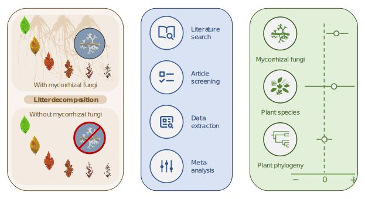
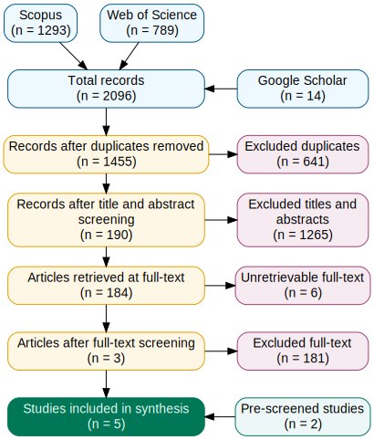
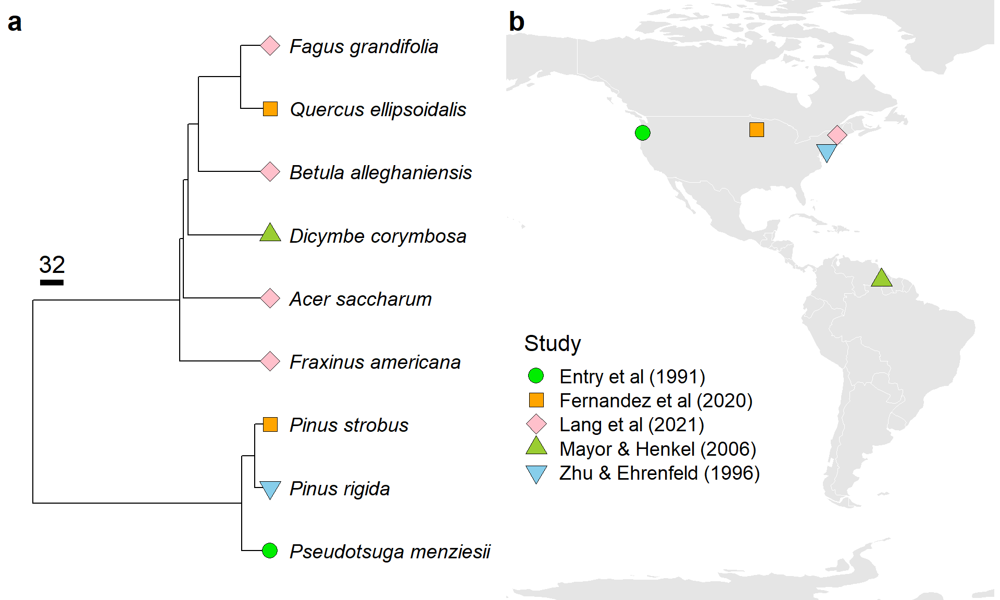
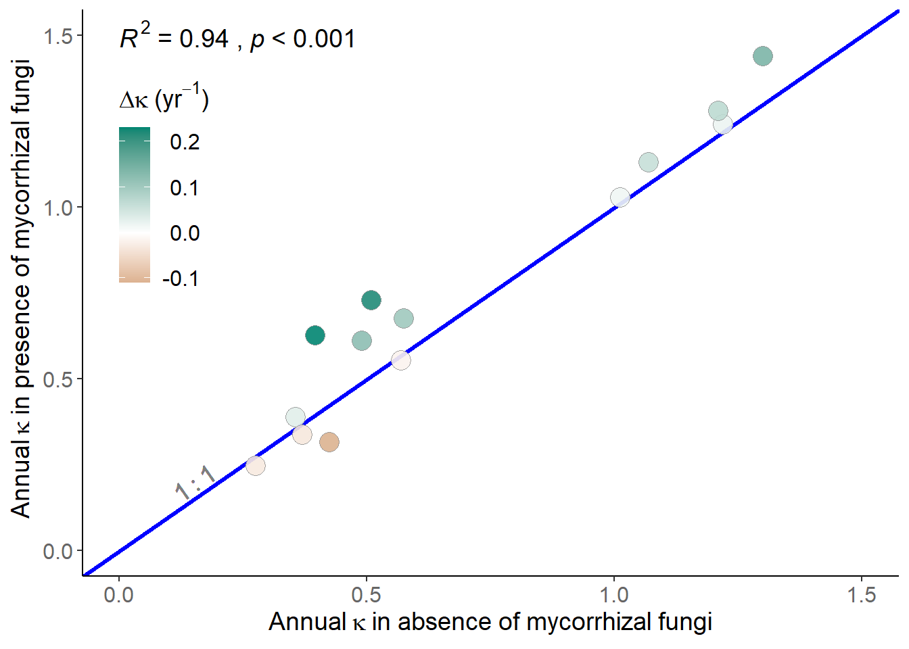
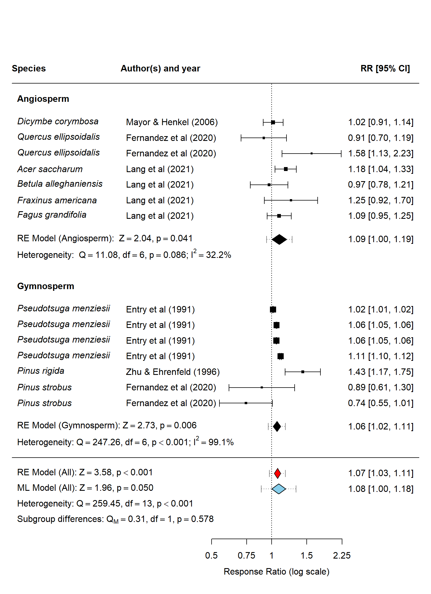
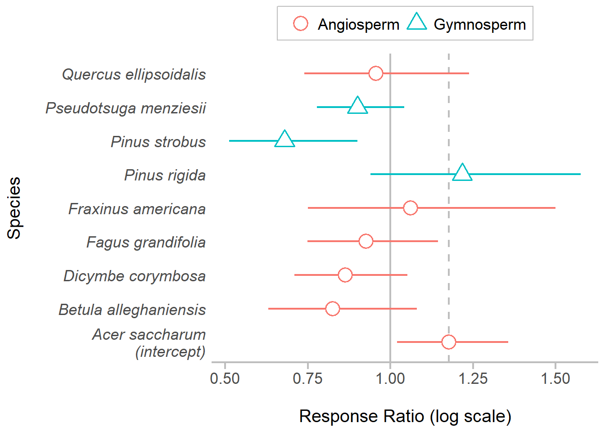
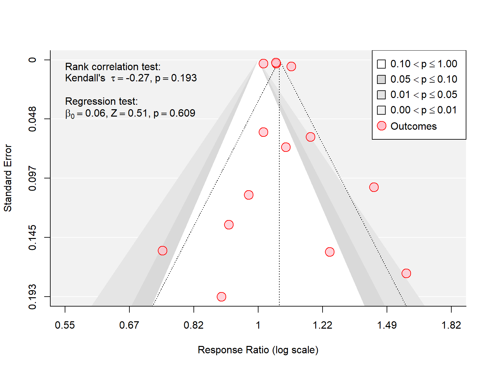

![]()
| Study | Experiments | Species | Sampling frequency | Initial weight (g) | Mesh size (mm) | Mycorrhizal type | Forest type |
|---|---|---|---|---|---|---|---|
| Entry, Rose, and Cromack (1991) | 4 | 1 | 1 | 5.00 | 1 | EMF | Temperate |
| Zhu and Ehrenfeld (1996) | 1 | 1 | 4 | 1.63 | 1 | EMF | Temperate |
| Mayor and Henkel (2006) | 1 | 1 | 3 | 17.00 | 1 | EMF | Tropical |
| Fernandez, See, and Kennedy (2020) | 4 | 2 | 3 | 2.00 | 2 | EMF & AMF | Temperate |
| Lang et al. (2021) | 4 | 4 | 3 | 1.00 | 2 | EMF | Temperate |
Mycorrhizal fungi accelerates litter decomposition rates in forest ecosystems
Abstract
The role of mycorrhizal fungi in modulating litter decomposition rates is complex, with potential outcomes of both facilitation and competition. However, the magnitude and direction of these effects have remained uncertain due to limited empirical evidence. We conducted a meticulous meta-analysis of published peer-reviewed literature to address this knowledge gap. Surprisingly, our systematic literature search, guided by pre-defined inclusion criteria, yielded only five comparable studies. Despite this constraint, our dataset comprised 14 estimates across nine species to evaluate the effects of mycorrhizal fungi on litter decomposition rates. Applying a random-effect meta-analytic model, we discovered compelling evidence (RR = 1.07, Z = 3.58, p < 0.001) supporting accelerated litter decomposition rates in the presence of mycorrhizal fungi. However, the influence of mycorrhizal fungi on decomposition varied significantly with species identity, while no discernible effects were observed based on phylogeny. These findings challenge the generality of the widely recognised “Gadgil effect” and underscore the importance of species-specific considerations. Our results highlight the potential of mycorrhizal-mediated mechanisms to enhance litter decomposition, prompting a re-evaluation of nutrient cycling dynamics. Incorporating mycorrhizal effects into ecological models and management strategies could significantly advance our understanding of ecosystem responses to global environmental change. Overall, this work contributes to the broader understanding of the ecological implications of mycorrhizal fungi and calls for additional research efforts to elucidate the mechanisms and generalizability of these effects comprehensively.
Keywords: gadgil effect; ectomycorrhizal fungi; arbuscular mycorrhizal fungi; forest ecosystem; litter decomposition; meta-analysis
Graphical abstract

Introduction
Global environmental change is expected to substantially alter the biogeochemistry and nutrient cycling in terrestrial ecosystems (Shu et al. 2019). Among terrestrial ecosystems, forest ecosystems acts as significant sink for soil organic matter and therefore, substantially influence the global nutrient cycling (Pan et al. 2011). The cycling of nutrients is primarily regulated by the process of litter decomposition, which releases nutrients from plant biomass to the soils (Shu et al. 2019; Patil, Kumar, Kumar, and Singh 2020). Much of the variations in the litter decomposition rates are explained by climate and litter quality (Zhang et al. 2008; Cornwell et al. 2008; Patil, Kumar, Kumar, Cheema, et al. 2020). However, the remaining proportion of variation is often attributed to the composition and activity of decomposer organisms (McGuire and Treseder 2010; Sulman et al. 2017). Among decomposer organisms, bacteria and fungi are two major group organisms involved in litter decomposition (Schneider et al. 2012; Heijden et al. 2015). Although the role of saprotrophic fungi is appreciated in litter decomposition, mycorrhizal fungi can also substantially influence litter decomposition because they often act as mediators of nutrients between plants and soil (Finlay 2005; Frey 2019; Kumar et al. 2021). Among the mycorrhizal associations, arbuscular mycorrhizal fungi (AMF) and ectomycorrhizal fungi (EMF) are commonly associated with vascular plants (Brundrett and Tedersoo 2018). While the AMF dominates the tropical forests, EMF associations are frequently observed in extra-tropical forests (Steidinger et al. 2019). Thus, the effects of mycorrhizal fungi are expected to vary not only among mycorrhizal groups, but also across the plant species, ecosystems and environmental conditions.
Mycorrhizal fungi have been observed to decrease the litter decomposition rates (Ruth L. Gadgil and Gadgil 1971; Ruth L. Gadgil and Gadgil 1975), which is frequently referred as ‘Gadgil effect’ in the literature (Ruth L. Gadgil and Gadgil 1971; Fernandez and Kennedy 2016). The ‘Gadgil effect’ has been observed for both ectomycorrhizal (Ruth L. Gadgil and Gadgil 1971) and arbuscular mycorrhizal fungi (Leifheit, Verbruggen, and Rillig 2015). The resource competition between saprotrophs (free living microbes) and symbionts (mycorrhizal fungi) have been suggested to retard the decomposition rates in presence of mycorrhizal fungi (Ruth L. Gadgil and Gadgil 1971; Brzostek et al. 2015). The specialized enzymatic suite and foraging behaviour of these mycorrhizal fungi have been attributed to their ability to outcompete the saprotrophic fungi or other detritivore community (Averill, Turner, and Finzi 2014; Talbot et al. 2015). Further, a literature review (Fernandez and Kennedy 2016) has also ascribed Gadgil effect to nitrogen competition (Orwin et al. 2011; Averill, Turner, and Finzi 2014), chemical inhibition or allelopathy (Krywolap, Grand, and Casida Jr. 1964; Rasanayagam and Jeffries 1992), myco-parasitism (Kubicek et al. 2011), and altered moisture-regimes (Koide and Wu 2003).
In contrast to Gadgil effect, mycorrhizal fungi also reported to enhance the litter decomposition rates (Frey 2019) through extracellular enzymatic degradation (Talbot et al. 2015), oxidation via Fenton chemistry (Beeck et al. 2018), and priming effects, i.e., stimulation of growth and activities of saprotrophic decomposers by providing plant-derived carbon sources (Herman et al. 2012; Gorka et al. 2019). The priming effects appear to be more widespread as mycorrhizal fungi have limited genetic capabilities to produce organic matter degrading enzymes (Frey 2019). The availability of labile exudates together with mycorrhizal necromass stimulates the activity of free-living bacteria and saprotrophic fungi, which leads to higher decomposition rates (Fernandez and Kennedy 2016). Further, the the differences in ecophysiology of mycorrhizal groups are expected to modulate their effects on litter decomposition rates (Tedersoo and Bahram 2019). For instance, the capacities for enzymatic degradation of organic matter widely vary among mycorrhizal taxa and it appears that EMF taxa have more degrading capacities than the AMF taxa (Frey 2019). Therefore, considering the type of mycorrhizal association can be important in understanding the role of mycorrhizal fungi in nutrient cycling.
Thus, available literature suggest that mycorrhizal fungi can either enhance the litter decomposition by providing plant-derived carbon-source (Zhu and Ehrenfeld 1996; Shah et al. 2016; Gui et al. 2017; Sterkenburg et al. 2018) or suppress it by competing for the same resources with saprotrophic fungi, also known as ‘Gadgil effect’ (Ruth L. Gadgil and Gadgil 1971; Ruth L. Gadgil and Gadgil 1975; Brzostek et al. 2015). Nevertheless, some studies found little or no effects of mycorrhizal association on litter decomposition (Staaf 1988). Therefore, the effects of mycorrhizal association on litter decomposition remained equivocal and highly variable in magnitude and direction, suggesting more complex mechanisms and contexts than previously thought (Fernandez and Kennedy 2016). Although few exemplary syntheses about the effects of mycorrhizal association on litter decomposition exist (Averill, Turner, and Finzi 2014; Fernandez and Kennedy 2016), quantitative estimates and direction of such effects remained ambiguous. Further, none of the earlier syntheses conducted a formal meta-analysis and their general conclusions might be confounded by sampling error or other sources of variations. Therefore, our primary objective is to quantitatively synthesise the magnitude and direction of mycorrhizal effects on litter decomposition rates in forest ecosystems. Further, we can expect substantial differences in effect due to species identity and phylogenetic relatedness among them because each species may have different quality of litter which can influence the decomposition rates. In addition to this, we aim to identify the knowledge gaps and suggestions for future investigations. Specifically, we aim to address the following questions:
- Do mycorrhizal presence affect rates of litter decomposition in forest ecosystems?
- What is the magnitude and direction of mycorrhizal effects on litter decomposition rates?
- Are these effects influenced by species or their phylogenetic relatedness?
- Do these effects differ between angiosperms and gymnosperms?
To accomplish this, we carried out a formal meta-analysis of available data from systematically identified comparable studies. In this meta-analysis, we included a forest plot showing the overall effect mycorrhizal fungi on litter decomposition, between-study heterogeneity, and a funnel plot for showing publication bias of studies. We explored different meta-analytic models and assessed the robustness of our estimates. Then, we discussed the results of all studies briefly. In the end, we draw conclusions of the mycorrhizal effect on litter decomposition based on the results of our meta-analysis.
Methodology
Our methodology broadly consisted of five phases, i.e., searching, screening, data extraction, statistical meta-analysis and sensitivity analysis. We followed the guidelines developed by Collaboration on Environmental Evidence (CEE 2018) to identify eligible studies using a systematic literature search and screening protocol. The protocol was developed by organising meetings and implemented in a similar manner as described earlier (Kumar et al. 2022). Further, the quality and reproducibility of meta-analysis was ensured by adhering to previously recommended guidelines (Koricheva and Gurevitch 2014; Nakagawa et al. 2017).
Literature search
We systematically searched Scopus (https://scopus.com/) and Web of Science Core Collection (https://webofknowledge.com/) on 17-18 February 2021 with the following search string:
(mycorrhiza* OR ectomycorrhiza* OR “saprotrophic fungi” OR plant-fung*) AND (litter OR “litter decay” OR (litter AND decompos*) OR decomposition OR “nutrient acquisition”) AND (forest).
This search string was developed by combining previously identified groups of keywords (see Supplementary Information). Additionally, Google Scholar (https://scholar.google.com/) was searched on 18-Feb-2021 using “Mycorrhiza decomposition” and “Mycorrhiza nutrient acquisition”. Thus, we obtained 789 records from Scopus, 1,293 records from Web of Science Core Collection, and 14 records from Google Scholar. All these 2,096 records were exported as BibTex files for further processing (see details in Supplementary Information).
Article screening
Our article screening involved de-duplication, title and abstract screening, and full-text screening. We left 1,455 records after de-duplication, and 641 duplicates were removed (Figure 1). All these records were imported to freely available Mendeley reference management software for further screening. We manually screened titles and abstracts of each document following a pre-defined criterion (see Supplementary information). Based on the title and abstract screening, we excluded 1,265 articles and left with 190 articles (Figure 1). We could not retrieve the full-text of six articles (see Supplementary information Table S2) and, therefore, excluded these six articles. Next, the full text of each article was screened based on PICO inclusion and exclusion criteria (Supplementary information Table S3). Full-text screening resulted in the exclusion of 181 articles based on PICO criteria (Figure 1). Thus, we were finally left with only three eligible studies (Entry, Rose, and Cromack 1991; Zhu and Ehrenfeld 1996; Lang et al. 2021). We further employed snowballing method to identify related eligible studies. We could not identify any suitable related study based on references of selected studies (backward snowballing). However, two more eligible articles (Mayor and Henkel 2006; Fernandez, See, and Kennedy 2020) were identified through forward snowballing (citation tracking). Thus, five studies were included after article screening and snowballing.

Data extraction
We needed data on litter decomposition rates in the presence and absence of mycorrhizal fungi to test our hypothesis. The litter decomposition rate is often expressed as annual decay constant usually estimated from Olson’s single exponential model (Olson 1963). Therefore, we aimed to extract the decay constant (\(\kappa\)) and associated standard error (SE) or standard deviation (SD) for each study to establish consistency in our analysis. Unfortunately, only a single study (Entry, Rose, and Cromack 1991) reported the data in required form. All other studies have represented litter decomposition rates as mass remaining at different time intervals (Zhu and Ehrenfeld 1996; Mayor and Henkel 2006; Fernandez, See, and Kennedy 2020; Lang et al. 2021). In such cases, we extracted each remaining mass value in triplicate (one mean value and two standard error of mean values) at each given time interval using the WebPlotDigitizer (https://automeris.io/WebPlotDigitizer/). Thus, the actual number of replicates of litterbags at each sampling time was not taken into account; instead, we considered each data point as a sample to obtain a more uniform and comparable measure of litter mass remaining. In case of any ambiguity in timings, we considered the time stated in the methodology section of the published article (Lang et al. 2021).
When the mass remaining data was available, the decay constant (\(\kappa\)) and its associated standard error (SE) was estimated by fitting a linearised form of Olson’s single exponential decay model (Olson 1963) as represented in (Equation 1).
\[ \log(M_t) = -\kappa~t + \log(M_0) \tag{1}\]
where \(M_0\) is the initial litter mass, \(M_t\) is the mass remaining at time \(t\), and \(\kappa\) is the decay constant. When a study reported data for the same species at different sub-sites (Fernandez, See, and Kennedy 2020) or different seasons (Entry, Rose, and Cromack 1991), we estimated or recorded the decay constant (\(\kappa\)) and its associated standard error (SE) or standard deviation (SD) separately. In addition to this, we recorded the plant species, mycorrhizal types, forest ecosystem types, litter types, and geographic coordinates of study sites. Further, we also noted technical information about methodologies, including the number of study experiments, duration of the investigation, exclusion method for mycorrhizal fungi, and the characteristics of litter and litter bags.
Phylogenetic data
To test the influence of phylogenetic relatedness, we used the recently published GBOTB backbone of phylogeny for seed plants, which is based on data from GenBank and Open Tree of Life (Smith and Brown 2018). It is considered as the largest dated phylogeny for 79,881 taxa of seed plants resolved at species level. We used the package V.PhyloMaker2 (version 0.1.0) to prepare a phylogenetic tree for the selected plant species (Jin and Qian 2022). The phylogeny was generated from the GBOTB.extended.LCVP mega-tree, which is a combination of two published phylogenies for plants (Smith and Brown 2018; Zanne et al. 2014). Plant names in this phylogenetic tree are standardised according to the Leipzig Catalogue of Vascular Plants (LCVP) (Freiberg et al. 2020). The nodes were built using the build.nodes.1.LCVP function, which returns the most recent common ancestor of all the tips in the largest cluster of the genus, and define it as the basal node of the genus. Further, the phylogeny was generated under the Scenario 3 for binding of new genus tip to the family branch as defined in earlier study (Qian and Jin 2016).
Effect size and variance
Various effect sizes are used to summarize the magnitude and direction of the relationship between two variables (Cooper, Hedges, and Valentine 2019; Harrer et al. 2021). Among available effect sizes, response ratios (also called as Ratio of Means) and standardised mean differences have been frequently used to compare the means between two groups (i.e., experimental and control) in ecology and evolution (Nakagawa and Santos 2012; Koricheva and Gurevitch 2014). The response ratio or ratio of means is recommended when the mean of control group is not very small as compared to experimental group and both groups have estimates of same sign either positive or negative (Hedges, Gurevitch, and Curtis 1999; Lajeunesse 2015). The log transformation of response ratio (\(\text{lnRR}\)) makes the metric equally sensitive to changes in both numerator and denominator, apart from making the metric nearly normal. Thus, it measures the actual difference in responses scaled to mean in control groups. However, \(\text{lnRR}\) is considered to be slightly biased towards null effects and usually estimate high heterogeneity than other effect size measures (Lajeunesse 2015).
Since the rate of litter decomposition is influenced by time (i.e., greater weight loss during initial phase than the later phases), we decided to compare decay constant rather than the weight loss. The log transformed response ratio (\(\text{lnRR}\)) and associated variance was calculated using the (Equation 2).
\[ \text{lnRR} = \ln \left( \frac{\bar X_E}{\bar X_C} \right); \quad \text{Var(lnRR)} = \frac {SD_E^2}{n_E \bar X_E^2} + \frac {SD_C^2}{n_C \bar X_C^2} \tag{2}\]
where, \(\bar X_E\) and \(\bar X_C\) represents the absolute litter decay constant (\(\kappa\)) for experimental (presence of mycorrhizal fungi) and control (absence of mycorrhizal fungi) groups, respectively. The large-sample approximation was used to compute the sampling variances (Equation 2) associated with the effect size \(\text{lnRR}\) (Hedges, Gurevitch, and Curtis 1999). The accuracy of \(\text{lnRR}\) was ensured with with Geary’s test (Equation 3) for both control and experimental group (Lajeunesse 2015).
\[ \frac{\bar X}{SD} \sqrt{N} \geq 3 \tag{3}\]
A positive value of response ratio (\(\text{lnRR} > 0\)) indicates faster whereas a negative value (\(\text{lnRR} < 0\)) means slower decomposition rates in presence of mycorrhizal fungi, and a value close to zero (\(\text{lnRR} \approx 0\)) indicates little or no effect. Both effect size and associated sampling variances were calculated using the function escalc() from the metafor package (Viechtbauer 2010).
Meta-analytic model
The overall aim of meta-analyses is to combine the effects or observations from different studies. There are three main types of meta-analytic models i.e., fixed-effect model (FEM), random-effects model (REM), and multilevel model (MLM), which are commonly used to compute the overall effect estimate in meta-analysis. The most basic fixed-effect or common-effect model assumes a common overall mean for all studies. Since it assumes homogeneity between studies, it is far from the reality, at least for ecological studies. In contrary to the fixed effect model, the assumptions of random-effects model are more realistic as it considers between-study heterogeneity. This model assumes that there is not only one actual effect size but a distribution of true effect sizes (Borenstein et al. 2010; Harrer et al. 2021). According to this model, the observed effect size \(y_i\) with variance \(v_i\) deviates from the mean true effect size \(\mu\) for a single study \(i\) (with \(i = 1, \ldots , N_{studies}\)) by two error terms \(u_i\) (between-study heterogeneity) and \(e_i\) (sampling error). Thus, the random effects model can be expressed as (Equation 4)
\[ \begin{align} y_i &= \mu + u_i + e_i\\ \textbf{u} &\sim \mathcal{N}(0, \sigma_u^2 \textbf{I}_u) \\ \textbf{e} &\sim \mathcal{N}(0, \textbf{V}) \end{align} \tag{4}\]
where, \(u_i\) is the random effect corresponding to the \(i^{th}\) study, \(\textbf{u}\) is a \(1 \times N_{studies}\) column vector with the \(u_i\) values (which are assumed to be normally distributed with mean \(0\) and variance \(\sigma_u^2\)) and \(\textbf{I}_u\) is an \(N_{studies} \times N_{studies}\) identity matrix, \(\textbf{e}\) is a \(1 \times N_{studies}\) column vector with the \(e_{i}\) values (which are assumed to be normally distributed with mean \(0\) and variance \(v_i\)), \(0\) is a column vector of zeros and \(\textbf{V}\) is an \(N_{studies} \times N_{studies}\) matrix with the \(v_i\) values along the diagonal.
Although the random-effects model is commonly used in ecology, it did not take into consideration the non-independence among effect sizes (Nakagawa and Santos 2012). The non-independence can arise when the effect sizes are shared by studies (i.e., multiple effect sizes from the same study). Further, phylogenetic relatedness among species can also introduce non-independence among the effect size estimates (Cinar, Nakagawa, and Viechtbauer 2021). This issue of non-independence can be addressed by using a multilevel (hierarchical) meta-analytic model, which considers a random effect at each level of variability in effect sizes. Among the several factors for non-independence of effect sizes, we specifically assessed the dependence due to studies, species and phylogenetic relatedness among species as described recently (Cinar, Nakagawa, and Viechtbauer 2021). We used a complex multilevel meta-analytic model mathematically expressed in (Equation 5)
\[ \begin{align} y_{ijk} &= \mu + u_{ij} + s_i + n_k + p_k + e_{ij} \\ \textbf{u} &\sim \mathcal{N}(0, \sigma_u^2 \textbf{I}_u) \\ \textbf{s} &\sim \mathcal{N}(0, \sigma_s^2 \textbf{I}_s) \\ \textbf{n} &\sim \mathcal{N}(0, \sigma_n^2 \textbf{I}_n) \\ \textbf{p} &\sim \mathcal{N}(0, \sigma_p^2 \textbf{A}) \\ \textbf{e} &\sim \mathcal{N}(0, \textbf{V}) \end{align} \tag{5}\]
where
- \(y_{ijk}\) is the \(j^{th}\) effect (with \(j = 1, \ldots, N_i\), where \(N_i\) is the number of effect sizes reported in the \(i^{th}\) study) in the \(i^{th}\) study (with \(i = 1, \ldots, N_{studies}\)) for the \(k^{th}\) species (with \(k = 1, \ldots, N_{species}\)), and \(v_{ijk}\) are corresponding sampling variances,
- \(\mu\) is the overall meta-analytic mean,
- \(u_{ij}\) is a random effect corresponding to the \(j^{th}\) effect size in the \(i^{th}\) study,
- \(s_i\) is a study-specific random effect for \(i^{th}\) study,
- \(n_k\) is a species-specific random effect for \(k^{th}\) species,
- \(p_k\) denotes the phylogenetic random effect for the \(k^{th}\) species,
- \(e_{ij}\) is the sampling error or residual corresponding to the \(j^{th}\) effect size in the \(i^{th}\) study,
- \(\textbf{u}\) is a \(1 \times N_{total}\) column vector with the \(u_{ij}\) values (which are assumed to be normally distributed with mean \(0\) and within-study variance \(\sigma_u^2\)), \(N_{total} = \sum_{i = 1}^{N_{studies}} N_i\) represents the total number of the effect sizes, \(\textbf{I}_u\) is an \(N_{total} \times N_{total}\) identity matrix,
- \(\textbf{s}\) is a \(1 \times N_{studies}\) column vector with the \(s_i\) values (which are assumed to be normally distributed with mean \(0\) and between-study variance \(\sigma_s^2\)), \(\textbf{I}_s\) is an \(N_{studies} \times N_{studies}\) identity matrix,
- \(\textbf{n}\) is a \(1 \times N_{species}\) column vector with the \(n_k\) values (which are assumed to be normally distributed with mean \(0\) and between-species variance \(\sigma_n^2\)) and \(\textbf{I}_n\) has dimensions \(N_{species} × N_{species}\),
- \(\textbf{p}\) is a \(1 \times N_{species}\) column vector with the \(p_k\) values (which are assumed to follow a multivariate normal distribution with mean \(0\) and variance–covariance matrix \(\sigma_p^2 \textbf{A}\), where \(\sigma_p^2\) denotes between-species variance due to the phylogeny, and \(\textbf{A}\) is the \(N_{species} \times N_{species}\) phylogenetic correlation matrix), and
- \(\textbf{e}\) is a \(1 \times N_{total}\) column vector with the \(e_{ij}\) values and \(\textbf{V}\) is the corresponding (diagonal) variance–covariance matrix with dimensions \(N_{total} \times N_{total}\).
The random-effects model was fitted using the rma() function whereas the complex multilevel meta-analytic model was fitted using the rma.mv() function from the metafor package (Viechtbauer 2010). The amount of heterogeneity under the both models were estimated using the less biased restricted maximum likelihood (REML) estimator (Viechtbauer 2005). The phylogenetic correlation matrix, denoted as \(\textbf{A}\) in (Equation 5), was computed under the Brownian model using the function vcv() from the ape package version 5.7.1 (Paradis and Schliep 2019). The branch lengths for each species was computed with the Grafen’s method (Grafen 1989) using the function compute.brlen() from the same package (Paradis and Schliep 2019).
Heterogeneity
The heterogeneity reflects the variations in true effect sizes, which is not accounted by the sampling error variance within the meta-analysis. Cochran’s \(Q\) is traditionally used in meta-analysis to assess the heterogeneity in meta-analysis (Cochran 1954). It is the inverse variance weighted sum of squares, which can be mathematically represented by (Equation 6)
\[ Q = \sum_{i=1}^{N_{studies}} w_i (y_i - \mu)^2; \quad w_i = \frac{1}{v_i} \tag{6}\]
where \(y_i\) is the observed effect for each study \(i^{th}\); \(\mu\) is the overall summary effect, \(w_i\) is the weight defined as inverse of variance (\(1/v_i\)) for \(i^{th}\) study.
Although Cochran’s \(Q\) has been widely used to test heterogeneity in meta-analyses (Nakagawa and Santos 2012; Koricheva and Gurevitch 2014), it is sensitive to size and precision of studies included meta-analysis (Borenstein et al. 2009; Harrer et al. 2021). Higgins and Thompson’s \(I^2\) statistic presents the more standardized form to estimate the between-study heterogeneity. It is defined as the percentage of variability in the effect size that is not caused by sampling error (Higgins and Thompson 2002). Similarly, the \(H^2\) statistic is used to describe the variance in observed effect sizes due to sampling error (Higgins and Thompson 2002). It is estimated as the ratio of observed variation to the expected variance due to sampling error. Although both \(I^2\) and \(H^2\) are measured based on the Cochran’s \(Q\), the Higgins and Thompson’s \(I^2\) and \(H^2\) were calculated based on more general definitions using the (Equation 7).
\[ I^2 = \frac{\sigma_u^2}{\sigma_u^2 + \sigma_e^2} \times 100; \quad H^2 = \frac{\sigma_u^2 + \sigma_e^2}{\sigma_e^2}; \quad \sigma_e^2 =\frac{(N_{studies}-1)\sum w_i}{(\sum w_i)^2 - \sum w_i^2} \tag{7}\]
where \(\sigma_u^2\) is the between-study variance (also referred as \(\tau^2\)), \(\sigma_e^2\) is the typical within-study variance, \(N_{studies}\) is the total number of studies, \(w_i\) is the weight defined as inverse of variance (\(1/v_i\)) for \(i^{th}\) study. We also included a prediction interval for the true overall summary effect (\(\mu\)) because high heterogeneity is expected for ecological studies (Senior et al. 2016).
Since \(Q\) and \(I^2\) are not designed to assess between-study heterogeneity for multilevel models (Nakagawa and Santos 2012), we computed heterogeneity \(I^2\) for our multilevel model as suggested earlier (Nakagawa and Santos 2012). Following the previous mathematical notations, the within-study heterogeneity \(I_u^2\) can be represented as (Equation 8) whereas \(H^2\) or phylogenetic heritability can be represented by (Equation 9). The values of \(H^2\) can range from 0 to 1, which corresponds to no phylogenetic relatedness to exact proportional to phylogenetic relatedness among effect sizes.
\[ I_u^2 = \frac {\sigma_u^2} {\sigma_u^2 + \sigma_s^2 + \sigma_n^2 + \sigma_p^2 + \sigma_e^2} \tag{8}\]
\[ H^2 = \frac{\sigma_p^2}{\sigma_u^2 + \sigma_s^2 + \sigma_n^2 + \sigma_p^2} \tag{9}\]
Meta-regression: The heterogeneity in the observed outcomes can be explained using a set of predictors or moderators in meta-analysis. Such effect size partitioning among various variables is sometimes known as subgroup analysis. In absence of potentially better predictors, we explored species identity and clade (angiosperm or gymnosperm) as predictors since they can act as a surrogate for species level traits including the litter quality. We fitted mixed-effects models to assess the clade-specific or species-specific variations in the effects.
Outlier and influential analysis: The overall pooled effect size can be heavily influenced by one or more outcomes (effect size), so that our estimated effect size is not robust. We assessed the outliers and influential cases using the studentised residuals and Cook’s distances for our random effects model (Viechtbauer and Cheung 2010). Outcomes with a studentised residual larger than the \(100 \times (1 − 0.05 / (2 \times N_{total}))^{th}\) percentile of a standard normal distribution are considered potential outliers (i.e., using a Bonferroni correction with two-sided \(\alpha = 0.05\) for \(N_{total}\) outcomes included in the meta-analysis). Similarly, outcomes with a Cook’s distance larger than the median plus six times the interquartile range of the Cook’s distances are considered to be influential.
Publication bias
The publication bias in the average effect size was assessed using the classical funnel plot. It is a scatter plot of the observed effect size for each study on the x-axis against a measure of the standard error on the y-axis of each study. In the absence of any publication bias, effect size distribution should roughly follow the funnel shape in the plot. We conducted the rank correlation test (Begg and Mazumdar 1994) and the regression test (Sterne and Egger 2006) to assess the asymmetry in the funnel plot. The regression was carried using the standard error of the observed outcomes as predictor.
Further, we computed the fail-safe numbers to assess the robustness of estimated average effect. Fail-safe numbers estimate the number of non-significant and or unpublished studies which would reduce the significance of overall average estimate if included in the meta-analysis. We used the unweighted Rosenthal’s (Rosenthal 1979) and weighted Rosenberg’s (Rosenberg 2005) approaches to estimate the fail-safe numbers.
All analyses were performed in R programming language and statistical environment version 4.3.0 (R Core Team 2023). The R package metafor version 4.2.0 (Viechtbauer 2010) for statistical meta-analysis, package ggtree version 3.7.2 used for visualisation of phylogenetic tree (Yu et al. 2016) and package tidyverse version 2.0.0 (Wickham et al. 2019) for general data manipulation and visualization.
Results
Overview of dataset
Our systematic literature search and screening found five eligible studies for the present analysis (Figure 1). Studies in our dataset differed in numerous ways, including experimental duration, sampling frequency, initial litter mass, litter species, mycorrhizal type, and forest type (Table 1).
These studies conducted total 14 experiments for nine different species. The leaf litter of nine plant species (Acer saccharum Marshall, Betula alleghaniensis Britton, Dicymbe corymbosa Benth., Fagus grandifolia Ehrh., Fraxinus americana L., Pinus rigida Mill., Pinus strobus L., Pseudotsuga menziesii (Mirbel) Franco Quercus ellipsoidalis E. J. Hill) was used during the experiments (Figure 2 a). The duration of experiments is also differed among studies and ranged from one year to 2.4 years. The initial leaf litter mass varied from 1.0 g to 17.0 g, and three studies used up to 2.0 g of leaf litter, whereas two studies used more than 2.0 g of leaf litter (Entry, Rose, and Cromack 1991; Mayor and Henkel 2006). Further, most of the studies involved ectomycorrhizal fungi (Entry, Rose, and Cromack 1991; Zhu and Ehrenfeld 1996; Mayor and Henkel 2006; Fernandez, See, and Kennedy 2020), while one study showed the involvement of both ectomycorrhizal and arbuscular mycorrhizal fungi (Lang et al. 2021). All the studies assured mycorrhizal exclusion by trenching to 30 cm soil depth.
Further, our dataset revealed that most studies were conducted in the temperate deciduous forest of North America (n = 4), and only one study was conducted in the tropical forest of Guyana of South America’s North Atlantic Coast (Figure 2 b). The earliest study included was from 1991 (Entry, Rose, and Cromack 1991), whereas the latest study was published in 2021 (Lang et al. 2021).

Overall effect estimate
A total of 14 estimates of litter decomposition (\(\kappa\)) were included in the meta-analysis (Figure 3). The observed response ratios (\(\text{RR}\)) ranged from 0.74 to 1.58, with the majority of estimates being positive (71%). Thus, the decomposition rate is also expected to be higher in the presence of mycorrhizal fungi on average (Figure 3). Further, a strong positive relationship was observed between annual decay constants for the presence and absence of mycorrhizal fungi (R2 = 0.94, p < 0.001), indicating that our dataset does not include extreme effect estimates.

Consistent with our expectations, both meta-analytic models also suggested an overall positive effect of mycorrhizal fungi on litter decomposition rates. The overall average effect estimate (\(\hat \mu\)) was 1.07 (95% CI: 1.03, 1.11) for the random effects model whereas the same was 1.08 (95% CI: 1, 1.18) for the multilevel model. The wider confidence intervals are expected in the latter model as it included additional sources of variations (number of levels, i.e., id, study, species). In ecological sense, these models indicated that on average the annual decay constant for leaf litter was 7-8% higher in presence of mycorrhizal fungi (Figure 4). The random-effects model found strong statistical evidence (Z = 3.58, p < 0.001) whereas the multilevel model showed moderate statistical evidence (Z = 1.96, p = 0.05) for the accelerated decomposition rates. This positive effect is also evident in the forest plot, where the right-side position of the diamond demonstrates that litter decomposition rate increased in the presence of mycorrhizal fungi (Figure 4).

The Cochran’s \(Q\) test for heterogeneity revealed significant variations (\(Q\) = 259.45, df = 13, p < 0.001) in true outcomes. Further, very high value of Higgins & Thompson’s statistic (\(I^2\) = 97.85%; 95% CI: 97.77, 99.94) suggest that most of the observed variations captured the real differences in true effects (\(\tau^2\) = 0.002). Similarly, the within-study variations in observed estimates were larger than the sampling error as indicated by \(H^2\) statistic (\(H^2\) = 46.43).
Consistent with random-effects model, the multilevel model also indicated very high heterogeneity (\(I_t^2\) = 99.5%) in true outcomes. The main advantage of multilevel model is that it allows us to estimate the heterogeneity in true outcomes at different levels of meta-analytic model. This model suggested that the heterogeneity due to species-specific effects was very large (\(\sigma_n^2\) = 0.007; \(I_n^2\) = 84.32%) followed by the within-study heterogeneity (\(\sigma_u^2\) = 0.001; \(I_u^2\) = 15.22%). Interestingly, neither between-study heterogeneity (\(\sigma_s^2\) = 0; \(I_s^2\) = 0) nor phylogeny-specific heterogeneity (\(\sigma_p^2\) = 0; \(I_p^2\) = 0) was detected by our multilevel model. Since no phylogenetic effects were observed, the phylogenetic heritability (\(H^2\) = 0) was also absent.
Given the high heterogeneity in true outcomes, the 95% prediction interval ranged from 0.97 to 1.17 as computed by the random effects model. However, the multilevel model suggested a much wider 95% prediction interval ranging from as low as 0.89 to as high as 1.33. Since the predicted values of average estimate included values both lesser and greater than one, we can expect slower decomposition rates in some experiments, though the presence of mycorrhizal fungi enhanced the litter decomposition on average (Figure 4).
The meta-regression model with clade (Angiosperm vs Gymnosperm) as categorical moderator suggested that experiments using litter of gymnosperm species obtained on average smaller effect (\(\beta_1\) = -0.03, SE = 0.05) as compared to angiosperms, though this difference was not statistically significant (\(Q_M\) = 0.31, df = 1, p = 0.578). Thus, inclusion of clade as moderator variable did not explained any variation in true effects. While the mixed-effects model with species as moderator reflected the variations of effect estimates among species (Figure 5). This meta-regression model indicated that at least one species had significantly different (higher or lower) response ratio than the response ratio for the reference level (Acer saccharum in our case). Thus, this model provided moderate statistical evidence that some amount of variations in true effects are indeed due to species (\(Q_M\) = 16.96, df = 8, p = 0.031). It appeared that about 29% of the total variations in the true outcomes were due to species. Although species explained some proportion of the total variations, there still exist variations in true effects that are not attributable to species. These unexplained variations are evident from the test for residual heterogeneity (\(Q\) = 239.52, df = 5, p < 0.001), which suggested large amount of unexplained variations in true effects. Further, this unexplained heterogeneity has large variance (\(\tau^2\) = 0.001) and it reflects the real variations that are not explained by species as suggested by high value of \(I^2\) = 98.8%.

Further, the examination of the studentised residuals revealed that none of the studies had a value larger than ± 2.91 and hence there was no indication of outliers in the context of this model. Similarly, the inspection of Cook’s distances indicated that none of the studies could be considered overly influential.
Publication bias
The visual inspection of the funnel plot did not indicate the publication bias as the outcomes appeared to be symmetrically distributed around the average effect estimate (Figure 6). The outcomes were well-fitted within the funnel as larger outcomes (with higher precision) were closely clustered at top whereas smaller outcomes (with lower precision) were dispersed around the average effect at bottom. Further, the funnel plot included nearly half outcomes in the non-significant region again suggesting absence of publication bias due to null findings of studies.

The intercept estimated from the regression test (\(\beta_0\) = 0.06; 95% CI: 0.016, 0.104) was not significantly higher than zero (Z = 0.51, p = 0.609). Also, there was non-significant low rank correlation (Kendall’s \(\tau\) = -0.27, p = 0.193) between standard error and response ratio of outcomes. Thus, both the statistical tests for funnel asymmetry also corroborated our initial visual observations of funnel plot symmetry, which can be considered as indication of negligible or no evidence of publication bias for the present meta-analysis. (Figure 6).
The Rosenthal’s fail-safe N of 2107 suggested that over 2,000 outcomes with average response ratio of 1.0 need to be added to make the average effect non-significant (p = 0.05). Similarly, the Rosenberg’s fail-safe N was 4019, indicating that there would need to be over 4,000 outcomes with a mean response ratio of 1.0 added to the analysis, before the cumulative effect would become statistically non-significant (p = 0.05). Considering that we were able to identify only 14 relevant outcomes, it is unlikely that we missed over 4,000 or over 2,000 outcomes. Thus, although it may be possible that we might have estimated biased effect, it is unlikely that the actual overall effect is zero. However, we acknowledge that it is just one form of publication bias among the several other sources of bias in the estimate.
Discussion
Considering the initially posed questions, our analysis found moderate to strong evidence that mycorrhizal presence indeed affects the rate of litter decomposition in forest ecosystems (Question 1). The overall average estimate suggested that mycorrhizal fungi tends to enhance the litter decomposition rate by 7-8% on average (Question 2), though it can vary from a decrease of about 10% to an increase of over 30% in presence of mycorrhizal fungi. As with other ecological meta-analyses, large variations in effects were observed as indicated by potentially large heterogeneity. A small proportion (~30%) of these variations can be attributed to differences in species specific traits, possibly through litter quality (Question 3). However, no statistical evidence was found for the differences between angiosperm and gymnosperm species, though slightly higher enhancement was observed for angiosperms than the gymnosperms (Question 4). Further, these effects did not vary due to phylogenetic relationship among the included species (Question 3).
In contrast to expectations of Gadgil effect, our findings suggested an overall increase in the litter decomposition rates in presence of mycorrhizal fungi, which is consistent with previous findings (Shah et al. 2016; Gui et al. 2017; Frey 2019; Lang et al. 2021). The enhanced litter decomposition rates have been observed in the presence of both ectomycorrhizal (Shah et al. 2016) and arbuscular mycorrhizal fungi (Gui et al. 2017). The ectomycorrhizal-mediated enhancement was suggested to be associated with the secretion of enzymes to acquire nutrients from organic matter (Jackson et al. 2019). These enzymes degrade the complex compounds and make them available to other decomposer organisms. However, the increased litter decomposition in the presence of arbuscular mycorrhizal fungi was attributed to their saprotrophic capabilities, which tend to acquire nutrients directly from organic matter (Hodge, Campbell, and Fitter 2001; Herman et al. 2012). Further, both ectomycorrhizal (Brzostek et al. 2015) and arbuscular mycorrhizal fungi (Herman et al. 2012) are observed to increase the activity of microbial communities by providing plant-based carbon sources, i.e., priming effects. Since microbial communities are associated with the breakdown of complex compounds and the release of nutrients, their increased activity enhances the litter decomposition rate (Schneider et al. 2012). Thus, our findings question the generality of ‘Gadgil effect’ and suggest that the magnitude and direction of ‘Gadgil effect’ can be highly inconsistent and variable (Fernandez and Kennedy 2016).
The much wider range of average effect (-10% to 30%) in our analysis suggest that multiple variables are involved in deriving the mycorrhizal effects on litter decomposition. Such a wider range is expected because the rate of litter decomposition is not controlled by mycorrhizal effects alone and several factors including climate, litter quality and soil decomposer organisms are involved in determining the decomposition rates (Zhang et al. 2008; Cornwell et al. 2008; Kumar et al. 2021). Thus, the mycorrhizal-mediated litter decomposition rates may either hamper or stimulate depending upon the stage of decomposition, soil profile, climatic condition, plant species, and fungal species (Fernandez and Kennedy 2016; Sterkenburg et al. 2018). The species-specific effects are observed in our analysis, as species identity appeared to explain a small part of total variations in the mycorrhizal effects. This species-specific variation in mycorrhizal effects can be attributed to the resource allocation strategy of plant species. When mycorrhizal fungi receive more carbon from the host plant, they can invest more in enzymes and secondary metabolites (Rineau et al. 2013). This higher investment can directly increase the enzymatic degradation capacity of mycorrhizal fungi leading to faster decomposition rates. Further, high resource allocation can result in higher production of labile exudates leading to stimulation of growth and activity of saprotrophic microbes (priming effects).
Further, the species identity can indirectly affect mycorrhizal effects through the quality of litter produced by a species (Cornwell et al. 2008; Patil, Kumar, Kumar, Cheema, et al. 2020). It is observed that ‘high quality’ litter (low lignin and high nitrogen) decomposes more rapidly than the ‘low quality’ litter (high lignin, low nitrogen) (Patil, Kumar, Kumar, Cheema, et al. 2020). Suppose a species will produce ‘high quality’ litter (low lignin and high nitrogen). In that case, mycorrhizal effects will be weaker due to more activities of saprotrophic fungi and decomposer micro-organisms whereas ‘low quality’ litter (high lignin, low nitrogen and high carbon content) will favour strong mycorrhizal effects as it will become accessible to the mycorrhizal fungi. Thus, it seems that various factors modulate the effects of mycorrhizal fungi on litter decomposition rate; therefore, these effects can be highly context-dependent (Fernandez and Kennedy 2016).
Although our meta-analysis supports the mycorrhizal-mediated faster decomposition rates, it suffers from some limitations and caveats. We expect that these limitations and caveats will inspire future investigations to advance our understanding about the role of mycorrhizal fungi in nutrient cycling. One of the major limitation of the present analysis is that the systematic literature search and screening resulted in a small number of comparable studies. Although the practice of systematic literature search and screening substantially improve the reproducibility of overall analysis, it may hamper us to identify all the evidence from the literature. Further, our strict eligibility criteria to identify comparable studies appeared to be overly narrower. Therefore, we suggest future research synthesis to include all possible studies across wider range of plant species and ecosystem types. Further, litter decomposition in natural ecosystems is regulated by a complex interaction of several factors (e.g., climate, soil, plant, and mycorrhizal fungi). However, our limited database did not allowed us to test the effects of these variables due to insufficient sample size. Furthermore, tropical forests are under-represented in our analysis, it may be possible that observed positive effects of mycorrhizal fungi are localised to temperate forests (Keller and Phillips 2019). Similarly, all the eligible studies considered only leaf litter for decomposition, the inclusion of litter from other sources might lead to variation in the results. Moreover, we have not considered the actual sample size, mean, and variation of measurements; instead, we considered the number of data points as the sample size to ensure the consistency among the studies. Finally, as with any systematic exercise, deviation from the systematic protocol (searching keywords, eligibility criteria) may lead to different results.
We encourage researchers to consider the known limitations of the present study. We observed that most studies considered leaf litter and litter from other sources (root, shoot, and wood) is lacking. Thus, there is a need to experiment with other litter along with leaf litter. Further, we suggest the future investigations to study the mycorrhizal effects on litter decomposition rates across biomes (grassland, heathland, temperate forest and tropical forest), plant species (angiosperm vs gymnosperm, exotic vs native species, leguminous vs non leguminous species, evergreen vs deciduous), litter type (fine roots vs leaf litter, high quality litter vs low quality litter), and mycorrhizal groups (arbuscular mycorrhizal fungi, ectomycorrhizal fungi, ericoid mycorrhizal fungi, orchid mycorrhizal fungi). Moreover, we need to investigate these effects along the gradients of climate, elevation and abundance of mycorrhizal fungi (i.e., trenching depth).
Conclusion
Our analysis provides valuable insights into the influence of mycorrhizal fungi on litter decomposition rates in forest ecosystems, challenging the generality of the widely recognised ‘Gadgil effect.’ The overall findings suggest a tendency for increased litter decomposition rates in the presence of mycorrhizal fungi. However, the considerable variability observed across species highlights the involvement of multiple underlying mechanisms. While our results shed light on the potential importance of mycorrhizal fungi in regulating litter decomposition, caution must be exercised regarding the generalisability and interpretability of these effects and processes. The complex nature of mycorrhizal associations and their interactions with other factors in ecosystems necessitates a deeper understanding of the specific contexts in which mycorrhizal fungi regulate litter decomposition and the mechanisms involved. To advance our knowledge and modelling capabilities regarding nutrient cycling responses to changing environments, improving our understanding of the mechanisms by which mycorrhizal fungi exert their influence on litter decomposition is crucial. However, the limited availability of evidence on this topic underscores the need for additional data and further research to comprehensively elucidate the role of mycorrhizal fungi in the mechanisms driving litter decomposition. In conclusion, our meta-analysis serves as a catalyst for future research endeavours, stimulating further investigations that will enhance our understanding of the roles of mycorrhizal fungi in nutrient cycling regulation across various scales. By expanding our knowledge in this area, we can ultimately improve the accuracy and effectiveness of ecosystem models and management strategies.
Acknowledgements
The authors are grateful to the Chairperson, Department of Botany, Panjab University, Chandigarh, to provide all the necessary facilities for the work. University Grants Commission, Government of India, New Delhi is acknowledged for financial support in the form of Junior Research Fellowships to Meenu Patil [(492/ (CSIR-UGC NET JUNE 2017)], Abhishek Kumar [507/ (OBC) (CSIR-UGC NET DEC. 2016)], and Pardeep Kumar [443/ (CSIR-UGC NET DEC. 2017)].
Data availability
All data and codes are currently available from https://github.com/kumar-a/kumar-a.github.io/tree/main/publications/2023-patil. After acceptance, we will publish all datasets and R codes with a DOI in Zenodo or FigShare repository.
Funding
University Grants Commission, Government of India, New Delhi is acknowledged for financial support in the form of Senior Research Fellowships to Meenu Patil [(492/ (CSIR-UGC NET JUNE 2017)], Abhishek Kumar [507/ (OBC) (CSIR-UGC NET DEC. 2016)], and Pardeep Kumar [443/ (CSIR-UGC NET DEC. 2017)].
References
Averill, Colin, Benjamin L. Turner, and Adrien C. Finzi. 2014. “Mycorrhiza-Mediated Competition Between Plants and Decomposers Drives Soil Carbon Storage.” Nature 505 (7484): 543–45. https://doi.org/10.1038/nature12901.
Beeck, Michiel Op De, Carl Troein, Carsten Peterson, Per Persson, and Anders Tunlid. 2018. “Fenton Reaction Facilitates Organic Nitrogen Acquisition by an Ectomycorrhizal Fungus.” New Phytologist 218 (1): 335–43. https://doi.org/10.1111/nph.14971.
Begg, Colin B., and Madhuchhanda Mazumdar. 1994. “Operating Characteristics of a Rank Correlation Test for Publication Bias.” Biometrics 50 (4): 1088–1101. https://doi.org/10.2307/2533446.
Borenstein, Michael, Larry V. Hedges, Julian P. T. Higgins, and Hannah R. Rothstein. 2009. Introduction to Meta-Analysis. 1st ed. Chichester: John Wiley & Sons, Ltd. https://doi.org/10.1002/9780470743386.
———. 2010. “A Basic Introduction to Fixed-Effect and Random-Effects Models for Meta-Analysis.” Research Synthesis Methods 1 (2): 97–111. https://doi.org/10.1002/jrsm.12.
Brundrett, Mark C., and Leho Tedersoo. 2018. “Evolutionary History of Mycorrhizal Symbioses and Global Host Plant Diversity.” New Phytologist 220 (4): 1108–15. https://doi.org/10.1111/nph.14976.
Brzostek, Edward R., Danilo Dragoni, Zachary A. Brown, and Richard P. Phillips. 2015. “Mycorrhizal Type Determines the Magnitude and Direction of Root-Induced Changes in Decomposition in a Temperate Forest.” New Phytologist 206 (4): 1274–82. https://doi.org/10.1111/nph.13303.
CEE. 2018. Guidelines and Standards for Evidence Synthesis in Environmental Management. Edited by Andrew S Pullin, Geoff K Frampton, Barbara Livoreil, and Gillian Petrokofsky. 5th ed. Collaboration for Environmental Evidence. https://environmentalevidence.org/information-for-authors/.
Cinar, Ozan, Shinichi Nakagawa, and Wolfgang Viechtbauer. 2021. “Phylogenetic Multilevel Meta-Analysis: A Simulation Study on the Importance of Modelling the Phylogeny.” Methods in Ecology and Evolution 13 (2): 383–95. https://doi.org/10.1111/2041-210x.13760.
Cochran, William G. 1954. “The Combination of Estimates from Different Experiments.” Biometrics 10 (1): 101–29. https://doi.org/10.2307/3001666.
Cooper, Harris, Larry V. Hedges, and Jeffrey C. Valentine, eds. 2019. The Handbook of Research Synthesis and Meta-Analysis. 3rd ed. New York: Russell Sage Foundation.
Cornwell, William K., Johannes H. C. Cornelissen, Kathryn Amatangelo, Ellen Dorrepaal, Valerie T. Eviner, Oscar Godoy, Sarah E. Hobbie, et al. 2008. “Plant Species Traits Are the Predominant Control on Litter Decomposition Rates Within Biomes Worldwide.” Ecology Letters 11 (10): 1065–71. https://doi.org/10.1111/j.1461-0248.2008.01219.x.
Entry, James A, Cathy L Rose, and Kermtt Cromack. 1991. “Litter Decomposition and Nutrient Release in Ectomycorrhizal Mat Soils of a Douglas Fir Ecosystem.” Soil Biology and Biochemistry 23 (3): 285–90. https://doi.org/10.1016/0038-0717(91)90065-r.
Fernandez, Christopher W., and Peter G. Kennedy. 2016. “Revisiting the ’Gadgil Effect’: Do Interguild Fungal Interactions Control Carbon Cycling in Forest Soils?” New Phytologist 209 (4): 1382–94. https://doi.org/10.1111/nph.13648.
Fernandez, Christopher W., Craig R. See, and Peter G. Kennedy. 2020. “Decelerated carbon cycling by ectomycorrhizal fungi is controlled by substrate quality and community composition.” New Phytologist 226 (2): 569–82. https://doi.org/10.1111/nph.16269.
Finlay, R. 2005. “Action and Interaction in the Mycorrhizal Hyphosphere — a Re-Evaluation of the Role of Mycorrhizas in Nutrient Acquisition and Plant Ecology.” In Nutrient Acquisition by Plants, edited by Hormoz BassiriRad, 221–76. Heidelberg: Springer-Verlag. https://doi.org/10.1007/3-540-27675-0_9.
Freiberg, Martin, Marten Winter, Alessandro Gentile, Alexander Zizka, Alexandra Nora Muellner-Riehl, Alexandra Weigelt, and Christian Wirth. 2020. “LCVP, the Leipzig Catalogue of Vascular Plants, a New Taxonomic Reference List for All Known Vascular Plants.” Scientific Data 7: 416. https://doi.org/10.1038/s41597-020-00702-z.
Frey, Serita D. 2019. “Mycorrhizal Fungi as Mediators of Soil Organic Matter Dynamics.” Annual Review of Ecology, Evolution, and Systematics 50 (1): 237–59. https://doi.org/10.1146/annurev-ecolsys-110617-062331.
Gadgil, Ruth L., and P. D. Gadgil. 1971. “Mycorrhiza and litter decomposition.” Nature 233 (5315): 133. https://doi.org/10.1038/233133a0.
Gadgil, Ruth L, and P D Gadgil. 1975. “Suppression of Litter Decomposition by Mycorrhizal Roots of Pinus radiata.” New Zealand Journal of Forestry Science 5 (1): 33–41.
Gorka, Stefan, Marlies Dietrich, Werner Mayerhofer, Raphael Gabriel, Julia Wiesenbauer, Victoria Martin, Qing Zheng, et al. 2019. “Rapid Transfer of Plant Photosynthates to Soil Bacteria via Ectomycorrhizal Hyphae and Its Interaction with Nitrogen Availability.” Frontiers in Microbiology 10 (February): 168. https://doi.org/10.3389/fmicb.2019.00168.
Grafen, Alan. 1989. “The Phylogenetic Regression.” Philosophical Transactions of the Royal Society B: Biological Sciences 326 (1233): 119–57. https://doi.org/10.1098/rstb.1989.0106.
Gui, Heng, Kevin Hyde, Jianchu Xu, and Peter Mortimer. 2017. “Arbuscular Mycorrhiza Enhance the Rate of Litter Decomposition While Inhibiting Soil Microbial Community Development.” Scientific Reports 7 (1): 42184. https://doi.org/10.1038/srep42184.
Haddaway, Neal R., Biljana Macura, Paul Whaley, and Andrew S. Pullin. 2018. “ROSES Reporting Standards for Systematic Evidence Syntheses: Pro Forma, Flow-Diagram and Descriptive Summary of the Plan and Conduct of Environmental Systematic Reviews and Systematic Maps.” Environmental Evidence 7 (1): 1–8. https://doi.org/10.1186/s13750-018-0121-7.
Harrer, Mathias, Pim Cuijpers, Toshi A. Furukawa, and David D. Ebert. 2021. Doing Meta-Analysis with R. Boca Raton: Chapman and Hall/CRC. https://doi.org/10.1201/9781003107347.
Hedges, Larry V., Jessica Gurevitch, and Peter S. Curtis. 1999. “The Meta-Analysis of Response Ratios in Experimental Ecology.” Ecology 80 (4): 1150–56. https://doi.org/10.1890/0012-9658(1999)080[1150:tmaorr]2.0.co;2.
Heijden, Marcel G. A., Francis M. Martin, Marc-André Selosse, and Ian R. Sanders. 2015. “Mycorrhizal Ecology and Evolution: The Past, the Present, and the Future.” New Phytologist 205 (4): 1406–23. https://doi.org/10.1111/nph.13288.
Herman, Donald J., Mary K. Firestone, Erin Nuccio, and Angela Hodge. 2012. “Interactions Between an Arbuscular Mycorrhizal Fungus and a Soil Microbial Community Mediating Litter Decomposition.” FEMS Microbiology Ecology 80 (1): 236–47. https://doi.org/10.1111/j.1574-6941.2011.01292.x.
Higgins, Julian P. T., and Simon G. Thompson. 2002. “Quantifying Heterogeneity in a Meta-Analysis.” Statistics in Medicine 21 (11): 1539–58. https://doi.org/10.1002/sim.1186.
Hodge, Angela, Colin D. Campbell, and Alastair H. Fitter. 2001. “An Arbuscular Mycorrhizal Fungus Accelerates Decomposition and Acquires Nitrogen Directly from Organic Material.” Nature 413 (6853): 297–99. https://doi.org/10.1038/35095041.
Jackson, Oyindamola, Richard S. Quilliam, Andy Stott, Helen Grant, and Jens-Arne Subke. 2019. “Rhizosphere Carbon Supply Accelerates Soil Organic Matter Decomposition in the Presence of Fresh Organic Substrates.” Plant and Soil 440 (1-2): 473–90. https://doi.org/10.1007/s11104-019-04072-3.
Jin, Yi, and Hong Qian. 2022. “V.PhyloMaker2: An Updated and Enlarged R Package That Can Generate Very Large Phylogenies for Vascular Plants.” Plant Diversity 44 (4): 335–39. https://doi.org/10.1016/j.pld.2022.05.005.
Keller, Adrienne B., and Richard P. Phillips. 2019. “Leaf Litter Decay Rates Differ Between Mycorrhizal Groups in Temperate, but Not Tropical, Forests.” New Phytologist 222 (1): 556–64. https://doi.org/10.1111/nph.15524.
Koide, Roger T., and T. Wu. 2003. “Ectomycorrhizas and Retarded Decomposition in a Pinus Resinosa Plantation.” New Phytologist 158 (2): 401–7. https://doi.org/10.1046/j.1469-8137.2003.00732.x.
Koricheva, Julia, and Jessica Gurevitch. 2014. “Uses and Misuses of Meta-Analysis in Plant Ecology.” Journal of Ecology 102 (4): 828–44. https://doi.org/10.1111/1365-2745.12224.
Krywolap, George N., Larry F. Grand, and L. E. Casida Jr. 1964. “The Natural Occurrence of an Antibiotic in the Mycorrhizal Fungus.” Canadian Journal of Microbiology 10 (3): 323–28. https://doi.org/10.1139/m64-044.
Kubicek, Christian P, Alfredo Herrera-Estrella, Verena Seidl-Seiboth, Diego A Martinez, Irina S Druzhinina, Michael Thon, Susanne Zeilinger, et al. 2011. “Comparative Genome Sequence Analysis Underscores Mycoparasitism as the Ancestral Life Style of Trichoderma.” Genome Biology 12 (4): R40. https://doi.org/10.1186/gb-2011-12-4-r40.
Kumar, Abhishek, Meenu Patil, Pardeep Kumar, Manoj Kumar, and Anand Narain Singh. 2022. “Plant Ecology in Indian Siwalik Range: A Systematic Map and Its Bibliometric Analysis.” Tropical Ecology 63 (September): 338–50. https://doi.org/10.1007/s42965-022-00229-x.
Kumar, Abhishek, Meenu Patil, Pardeep Kumar, and Anand Narain Singh. 2021. “Phosphorus and Litter Decomposability Traits in Tropical Forest Ecosystems Under Changing Environment: A Synthesis.” In Tropical Dry Forests: Emerging Features and Ecological Perspectives, edited by Ravi Kant Chaturvedi, Rishikesh Singh, and Rahul Bhadouria, 311–36. New York: Nova Science Publishers.
Lajeunesse, Marc J. 2015. “Bias and Correction for the Log Response Ratio in Ecological Meta-Analysis.” Ecology 96 (8): 2056–63. https://doi.org/10.1890/14-2402.1.
Lang, Ashley K., Fiona V. Jevon, Corinne R. Vietorisz, Matthew P. Ayres, and Jaclyn Hatala Matthes. 2021. “Fine Roots and Mycorrhizal Fungi Accelerate Leaf Litter Decomposition in a Northern Hardwood Forest Regardless of Dominant Tree Mycorrhizal Associations.” New Phytologist 230 (1): 316–26. https://doi.org/10.1111/nph.17155.
Leifheit, E. F., E. Verbruggen, and M. C. Rillig. 2015. “Arbuscular Mycorrhizal Fungi Reduce Decomposition of Woody Plant Litter While Increasing Soil Aggregation.” Soil Biology and Biochemistry 81 (February): 323–28. https://doi.org/10.1016/j.soilbio.2014.12.003.
Mayor, Jordan R., and Terry W. Henkel. 2006. “Do Ectomycorrhizas Alter Leaf-Litter Decomposition in Monodominant Tropical Forests of Guyana?” New Phytologist 169 (3): 579–88. https://doi.org/10.1111/j.1469-8137.2005.01607.x.
McGuire, Krista L., and Kathleen K. Treseder. 2010. “Microbial Communities and Their Relevance for Ecosystem Models: Decomposition as a Case Study.” Soil Biology and Biochemistry 42 (4): 529–35. https://doi.org/10.1016/j.soilbio.2009.11.016.
Nakagawa, Shinichi, Daniel W. A. Noble, Alistair M. Senior, and Malgorzata Lagisz. 2017. “Meta-Evaluation of Meta-Analysis: Ten Appraisal Questions for Biologists.” BMC Biology 15 (1): 18. https://doi.org/10.1186/s12915-017-0357-7.
Nakagawa, Shinichi, and Eduardo S. A. Santos. 2012. “Methodological Issues and Advances in Biological Meta-Analysis.” Evolutionary Ecology 26 (5): 1253–74. https://doi.org/10.1007/s10682-012-9555-5.
Olson, Jerry S. 1963. “Energy Storage and the Balance of Producers and Decomposers in Ecological Systems.” Ecology 44 (2): 322–31. https://doi.org/10.2307/1932179.
Orwin, Kate H., Miko U. F. Kirschbaum, Mark G. St John, and Ian A. Dickie. 2011. “Organic Nutrient Uptake by Mycorrhizal Fungi Enhances Ecosystem Carbon Storage: A Model-Based Assessment.” Ecology Letters 14 (5): 493–502. https://doi.org/10.1111/j.1461-0248.2011.01611.x.
Pan, Yude, Richard A. Birdsey, Jingyun Fang, Richard Houghton, Pekka E. Kauppi, Werner A. Kurz, Oliver L. Phillips, et al. 2011. “A Large and Persistent Carbon Sink in the World’s Forests.” Science 333 (6045): 988–93. https://doi.org/10.1126/science.1201609.
Paradis, E., and K. Schliep. 2019. “ape 5.0: An Environment for Modern Phylogenetics and Evolutionary Analyses in R.” Bioinformatics 35: 526–28.
Patil, Meenu, Abhishek Kumar, Pardeep Kumar, Navneet Kaur Cheema, Rupinder Kaur, Ramchand Bhatti, and A. N. Singh. 2020. “Comparative Litter Decomposability Traits of Selected Native and Exotic Woody Species from an Urban Environment of North-Western Siwalik Region, India.” Scientific Reports 10 (May): 7888. https://doi.org/10.1038/s41598-020-64576-2.
Patil, Meenu, Abhishek Kumar, Pardeep Kumar, and A. N. Singh. 2020. “Litter decomposability traits and their linkage with the cycling of nutrients in the forest ecosystems under the lens of climate change: A conceptual overview.” Advances in Zoology and Botany 8 (3): 269–77. https://doi.org/10.13189/azb.2020.080324.
Qian, Hong, and Yi Jin. 2016. “An Updated Megaphylogeny of Plants, a Tool for Generating Plant Phylogenies and an Analysis of Phylogenetic Community Structure.” Journal of Plant Ecology 9 (2): 233–39. https://doi.org/10.1093/jpe/rtv047.
R Core Team. 2023. R: A Language and Environment for Statistical Computing (version 4.3.0). Vienna, Austria: R Foundation for Statistical Computing. https://www.R-project.org/.
Rasanayagam, S., and P. Jeffries. 1992. “Production of Acid Is Responsible for Antibiosis by Some Ectomycorrhizal Fungi.” Mycological Research 96 (11): 971–76. https://doi.org/10.1016/s0953-7562(09)80600-x.
Rineau, F, F Shah, M M Smits, P Persson, T Johansson, R Carleer, C Troein, and A Tunlid. 2013. “Carbon Availability Triggers the Decomposition of Plant Litter and Assimilation of Nitrogen by an Ectomycorrhizal Fungus.” ISME Journal 7 (10): 2010–22. https://doi.org/10.1038/ismej.2013.91.
Rosenberg, Michael S. 2005. “The File-Drawer Problem Revisited: A General Weighted Method for Calculating Fail-Safe Numbers in Meta-Analysis.” Evolution 59 (2): 464–68. https://doi.org/10.1111/j.0014-3820.2005.tb01004.x.
Rosenthal, Robert. 1979. “The File Drawer Problem and Tolerance for Null Results.” Psychological Bulletin 86 (3): 638–41. https://doi.org/10.1037/0033-2909.86.3.638.
Schneider, Thomas, Katharina M. Keiblinger, Emanuel Schmid, Katja Sterflinger-Gleixner, Günther Ellersdorfer, Bernd Roschitzki, Andreas Richter, Leo Eberl, Sophie Zechmeister-Boltenstern, and Kathrin Riedel. 2012. “Who Is Who in Litter Decomposition Metaproteomics Reveals Major Microbial Players and Their Biogeochemical Functions.” ISME Journal 6 (9): 1749–62. https://doi.org/10.1038/ismej.2012.11.
Senior, Alistair M., Catherine E. Grueber, Tsukushi Kamiya, Malgorzata Lagisz, Katie O’Dwyer, Eduardo S. A. Santos, and Shinichi Nakagawa. 2016. “Heterogeneity in Ecological and Evolutionary Meta-Analyses: Its Magnitude and Implications.” Ecology 97 (12): 3293–99. https://doi.org/10.1002/ecy.1591.
Shah, Firoz, César Nicolás, Johan Bentzer, Magnus Ellström, Mark Smits, Francois Rineau, Björn Canbäck, et al. 2016. “Ectomycorrhizal Fungi Decompose Soil Organic Matter Using Oxidative Mechanisms Adapted from Saprotrophic Ancestors.” New Phytologist 209 (4): 1705–19. https://doi.org/10.1111/nph.13722.
Shu, Meng, Qingzhou Zhao, Zhen Li, Lin Zhang, Peng Wang, and Shuijin Hu. 2019. “Effects of Global Change Factors and Living Roots on Root Litter Decomposition in a Qinghai-Tibet Alpine Meadow.” Scientific Reports 9 (1): 16924. https://doi.org/10.1038/s41598-019-53450-5.
Smith, Stephen A., and Joseph W. Brown. 2018. “Constructing a Broadly Inclusive Seed Plant Phylogeny.” American Journal of Botany 105 (3): 302–14. https://doi.org/10.1002/ajb2.1019.
Staaf, H. 1988. “Litter Decomposition in Beech Forests ? Effects of Excluding Tree Roots.” Biology and Fertility of Soils 6 (4): 302–5. https://doi.org/10.1007/bf00261017.
Steidinger, B. S., T. W. Crowther, J. Liang, M. E. Van Nuland, G. D. A. Werner, P. B. Reich, G. J. Nabuurs, et al. 2019. “Climatic Controls of Decomposition Drive the Global Biogeography of Forest-Tree Symbioses.” Nature 569 (7756): 404–8. https://doi.org/10.1038/s41586-019-1128-0.
Sterkenburg, Erica, Karina E. Clemmensen, Alf Ekblad, Roger D. Finlay, and Björn D. Lindahl. 2018. “Contrasting Effects of Ectomycorrhizal Fungi on Early and Late Stage Decomposition in a Boreal Forest.” ISME Journal 12 (9): 2187–97. https://doi.org/10.1038/s41396-018-0181-2.
Sterne, Jonathan A. C., and Matthias Egger. 2006. “Regression Methods to Detect Publication and Other Bias in Meta-Analysis.” In Publication Bias in Meta-Analysis, edited by Hannah R. Rothstein, Alexander J. Sutton, and Michael Borenstein, 99–110. John Wiley & Sons, Ltd. https://doi.org/10.1002/0470870168.ch6.
Sulman, Benjamin N., Edward R. Brzostek, Chiara Medici, Elena Shevliakova, Duncan N. L. Menge, and Richard P. Phillips. 2017. “Feedbacks Between Plant N Demand and Rhizosphere Priming Depend on Type of Mycorrhizal Association.” Ecology Letters 20 (8): 1043–53. https://doi.org/10.1111/ele.12802.
Talbot, Jennifer M., Francis Martin, Annegret Kohler, Bernard Henrissat, and Kabir G. Peay. 2015. “Functional Guild Classification Predicts the Enzymatic Role of Fungi in Litter and Soil Biogeochemistry.” Soil Biology and Biochemistry 88 (September): 441–56. https://doi.org/10.1016/j.soilbio.2015.05.006.
Tedersoo, Leho, and Mohammad Bahram. 2019. “Mycorrhizal Types Differ in Ecophysiology and Alter Plant Nutrition and Soil Processes.” Biological Reviews 94 (5): 1857–80. https://doi.org/10.1111/brv.12538.
Viechtbauer, Wolfgang. 2005. “Bias and Efficiency of Meta-Analytic Variance Estimators in the Random-Effects Model.” Journal of Educational and Behavioral Statistics 30 (3): 261–93. https://doi.org/10.3102/10769986030003261.
———. 2010. “Conducting Meta-Analyses in R with the metafor Package.” Journal of Statistical Software 36 (3): 1–48. https://doi.org/10.18637/jss.v036.i03.
Viechtbauer, Wolfgang, and Mike W.-L. Cheung. 2010. “Outlier and Influence Diagnostics for Meta-Analysis.” Research Synthesis Methods 1 (2): 112–25. https://doi.org/10.1002/jrsm.11.
Wickham, Hadley, Mara Averick, Jennifer Bryan, Winston Chang, Lucy McGowan, Romain François, Garrett Grolemund, et al. 2019. “Welcome to the Tidyverse.” Journal of Open Source Software 4 (43): 1686. https://doi.org/10.21105/joss.01686.
Yu, Guangchuang, David K. Smith, Huachen Zhu, Yi Guan, and Tommy Tsan-Yuk Lam. 2016. “ggtree: An R Package for Visualization and Annotation of Phylogenetic Trees with Their Covariates and Other Associated Data.” Methods in Ecology and Evolution 8 (1): 28–36. https://doi.org/10.1111/2041-210x.12628.
Zanne, Amy E., David C. Tank, William K. Cornwell, Jonathan M. Eastman, Stephen A. Smith, Richard G. FitzJohn, Daniel J. McGlinn, et al. 2014. “Three Keys to the Radiation of Angiosperms into Freezing Environments.” Nature 506 (7486): 89–92. https://doi.org/10.1038/nature12872.
Zhang, Deqiang, Dafeng Hui, Yiqi Luo, and Guoyi Zhou. 2008. “Rates of Litter Decomposition in Terrestrial Ecosystems: Global Patterns and Controlling Factors.” Journal of Plant Ecology 1 (2): 85–93. https://doi.org/10.1093/jpe/rtn002.
Zhu, Weixing, and Joan G. Ehrenfeld. 1996. “The Effects of Mycorrhizal Roots on Litter Decomposition, Soil Biota, and Nutrients in a Spodosolic Soil.” Plant and Soil 179 (1): 109–18. https://doi.org/10.1007/bf00011648.